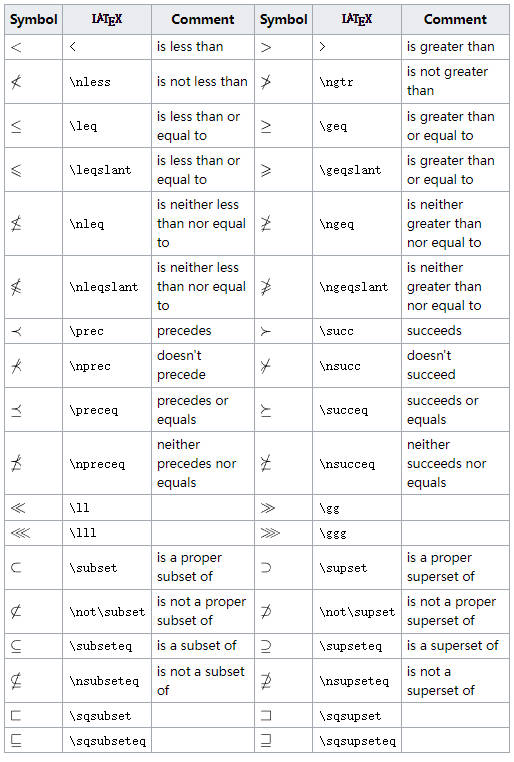

写博客，经常会遇到输入数学公式以及符号，之前总是通过截图的方式，将数学公式粘贴到文档中，速度很慢，浪费了太多的时间。而 Latex 的一个最大的用途就是可以键入复杂的数学符号，所以这里做一个记录。
可以使用 latex base 和 overleaf 等在线编辑器学习 latex 语法。
符号截图均来自：List of LaTeX mathematical symbols
Greek letters:
Archaic Greek letters:

在 latex 中有三种可以输入数学公式的模式：
$...$: 行内数学公式\[....\] 和 $$...$$: 在新的一行的中间添加一个数学公式\beging{equation}....\end{equation}: 在新的一行的中间添加一个数学公式，并且附带标签。一般为了简写，都用第一种和第二种即可。
编辑器中输入以下内容：
\documentclass[12pt]{article}
\begin{document}
inline: $x^2 = 6$
$$
x^2 = 5
$$
\[
x^2 = 5
\]
\begin{equation}
x^2 = 5
\end{equation}
\end{document}
显示如下结果：
（未完待续）